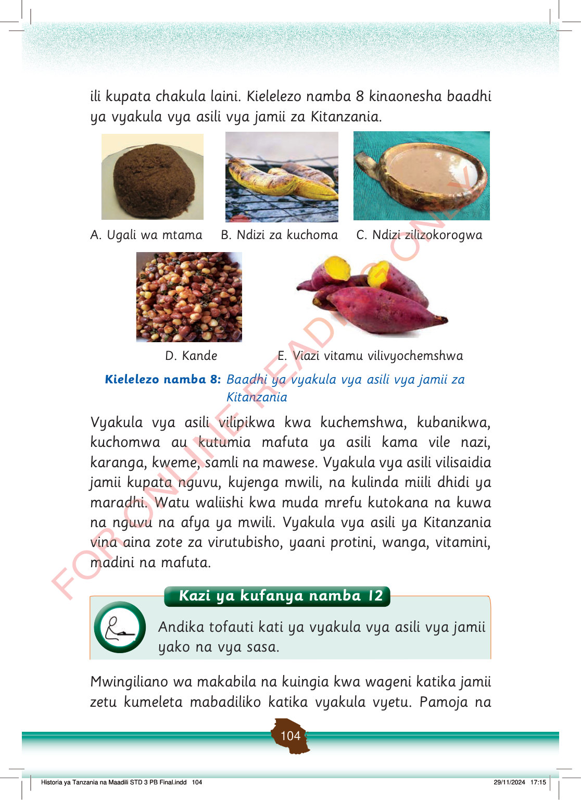

ili kupata chakula laini.
Kielelezo namba 8 kinaonesha baadhi ya vyakula vya asili vya jamii za Kitanzania.
Ugali wa mtama kwenye sahani.
A. Ugali wa mtama
Ndizi za kuchoma juu ya jiko la mkaa.
B. Ndizi za kuchoma
Ndizi zilizokorogwa ndani ya bakuli la asili.
C. Ndizi zilizokorogwa
Kande zilizopikwa.
D. Kande
Viazi vitamu vilivyochemshwa.
E. Viazi vitamu vilivyochemshwa
Kielelezo namba 8: Baadhi ya vyakula vya asili vya jamii za Kitanzania
Vyakula vya asili vilipikwa kwa kuchemshwa, kubanikwa, kuchomwa au kutumia mafuta ya asili kama vile nazi, karanga, kweme, samli na mawese.
Vyakula vya asili vilisaidia jamii kupata nguvu, kujenga mwili, na kulinda miili dhidi ya maradhi.
Watu waliishi kwa muda mrefu kutokana na kuwa na nguvu na afya ya mwili.
Vyakula vya asili ya Kitanzania vina aina zote za virutubisho, yaani protini, wanga, vitamini, madini na mafuta.
Mwingiliano wa makabila na kuingia kwa wageni katika jamii zetu kumeleta mabadiliko katika vyakula vyetu.
Pamoja na
Kazi ya kufanya namba 12
Andika tofauti kati ya vyakula vya asili vya jamii yako na vya sasa.